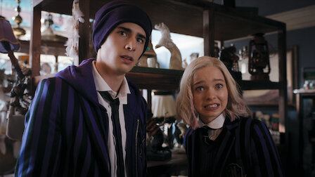

웬즈데이
2022 | 15+ | 시즌1개 | 판타지
똑똑하고 비꼬는 것에 도가 튼 웬즈데이 아담스. 암울함을 풍기는 그녀가
네버모어 아카데미에서 연쇄 살인 사건을 조사하기 시작한다. 새 친구도 사귀고,
앙숙도 만들며.
주연 : 제나 오르테가,궨덜린 크리스티,리키 린드홈
크리에이터 : 앨프리드 고프,마일스 밀러
무제한으로 즐기세요
영상
| 웬즈데이
예고편: 웬즈데이
회차
| 웬즈데이
시즌 1
공개일 : 2022
똑똑하고 비꼬는 것에 도가 튼 웬즈데이 아담스. 암울함을 풍기는 그녀가 네버모어 아카데미에서 연쇄 살인
사건을 조사하기 시작한다. 새 친구들도 사귀고, 앙숙도 만들며.
사건을 조사하기 시작한다. 새 친구들도 사귀고, 앙숙도 만들며.
-

1.수요일의 아이는 울적하다
60분이전 학교에서 끝내주게 사악한 장난을 치는 바람에 퇴학당한 웬즈데이. 부모님은 둘이 처음 사랑에 빠졌던 기숙학교, 네버모어 아카데미로 웬즈데이를 보낸다. -

2.가장 외로운 사람
49분그날 밤 벌어진 이상한 사건에 대해 웬즈데이를 취조하는 보안관. 이후, 웬즈데이는 살벌한 포컵 경주에서 강력한 라이벌과 맞붙는다. -

3.친구냐 고독이냐
49분비밀의 사교클럽을 알게 된 웬즈데이. 네버모어의 별종들은 포용의 날을 맞아 제리코의 평범이들과 순례자 월드에서 어울린다. 달달한 퍼지 한입 하실 분? -

4.우울하고 멋진 밤
50분웬즈데이가 까마귀 무도회 파트너로 제이비어를 선택하는 바람에 타일러는 질투가 난다. 그런데 씽에게는 다른 계획이 있었으니. 한편 유진은 동굴에서 잠복하기로 한다. -

5.불행 심은 데 불행 난다
52분학부모 초청 주말, 웬즈데이는 가족의 과거를 파헤친다. 그 바람에 아빠가 체포될 줄은 몰랐지만. 이니드는 '늑대 각성'을 해야 한다는 압박감을 느낀다. -
6.못되게 굴 때 생기는 일
50분웬즈데이에게 깜짝 생일 파티를 열어준 친구들. 의도는 좋았지만... 웬즈데이는 차라리 살인 사건을 해결하러 가고 싶다. 생일은 끔찍이도 싫으니까. -

7.아직도 나를 모른다면 너의 손해
47분학교를 방문한 괴짜 페스터 삼촌이 괴물에 대한 가설을 늘어놓는다. 웬즈데이는 마지못해 타일러와 데이트를 하기로 한다. 장소는 바로 크랙스톤 석묘. -

8.어둠의 무리
52분윔스 교장과 관련해 큰 문제에 휘말린 웬즈데이. 하지만 이건 시작일 뿐이었으니. 고대의 악령과 싸우려면 모든 친구들의 힘이 필요하다.
상세 정보
오프라인 시청
장르
웬즈데이 소개
저장 기능은 광고 없는
멤버십에서만 이용 가능합니다.
멤버십에서만 이용 가능합니다.
청춘 드라마,청소년 시리즈,미스터리 시리즈,코미디 시리즈,범죄 시리즈,미국 TV 프로그램,판타지 시리즈
Tudum.com에서 비하인드 영상과 다른 소식을 만나보세요.
출연
제나 오르테가
헌터 두핸
조지 파머
헌터 두핸
조지 파머
궨덜린 크리스티
퍼시 하인즈 화이트
나오미 J. 오가와
퍼시 하인즈 화이트
나오미 J. 오가와
리키 린드홈
에마 마이어스
캐서린 제타 존스
에마 마이어스
캐서린 제타 존스
크리스티나 리치
조이 선데이
루이스 구스만
조이 선데이
루이스 구스만
제이미 맥셰인
무사 모스타파
무사 모스타파
함께 시청된 콘텐츠


공개 임박
메니페스트
사냥개들
바비의 인어 공주 이야기
레지던트 이불 2
리키줌
비행기가 착륙하니 세계는 불가사의하게도
이미 수년이 지나있고, 시간의 흐름이
캄승객들만 비껴간 것 같다. 도착한 승객들은
기이한 새로운 현실과 마주한다.
이미 수년이 지나있고, 시간의 흐름이
캄승객들만 비껴간 것 같다. 도착한 승객들은
기이한 새로운 현실과 마주한다.
두 청년 복서가 선한 대부업자와 한뜻으로
뭉친다. 돈 때문에 절박한 약자들을 먹잇감
삼는 악랄한 사채업자에 대적하기 위해.
뭉친다. 돈 때문에 절박한 약자들을 먹잇감
삼는 악랄한 사채업자에 대적하기 위해.
자신이 인어라는 사실을 알게 된 소녀 멀리아.
서핑 챔피언인 멀리아는 돌고래의 도움을 받아
오세아나의 여왕인 엄마를 구해야 한다!
서핑 챔피언인 멀리아는 돌고래의 도움을 받아
오세아나의 여왕인 엄마를 구해야 한다!
죽음의 바이러스가 확산되자 봉쇄에 들어간
라쿤 시티. 좀비와 함께 그곳에 갇힌 앨리스와
엘리트 군단은 새로운 악의 등장을 마주한다.
라쿤 시티. 좀비와 함께 그곳에 갇힌 앨리스와
엘리트 군단은 새로운 악의 등장을 마주한다.
리키 줌과 단짝 바이크 친구들이 바이크 마을
휠포드를 쌩쌩 달려요. 구조 임무도 해내고
빠르게 움직이는 스턴트도 배운답니다.
우리도 함께 신나게 달려볼까요!
휠포드를 쌩쌩 달려요. 구조 임무도 해내고
빠르게 움직이는 스턴트도 배운답니다.
우리도 함께 신나게 달려볼까요!
아놀드
러브 데스티나: 더 무비
뷰티풀 라이프
보디빌딩 챔피언부터 시작해 할리우드
아이콘을 거쳐 정치인이 되기까지, 아놀드
슈워제네거의 다각적인 삶과 커리어를 따라가는
내밀한 다큐시리즈.
아이콘을 거쳐 정치인이 되기까지, 아놀드
슈워제네거의 다각적인 삶과 커리어를 따라가는
내밀한 다큐시리즈.
다른 생에서 사랑했던 여인을 꿈에서 본 한
남자. 그녀를 다시 만나게 될 운명이라고
믿는다. 하지만 정체를 알 수 없는 시간 여행자가
나타나 그의 계획을 방해한다.
남자. 그녀를 다시 만나게 될 운명이라고
믿는다. 하지만 정체를 알 수 없는 시간 여행자가
나타나 그의 계획을 방해한다.
남다른 재능을 숨기고 살던 청년 어부가 어느
날 한 음악 프로듀서의 눈길을 끈다. 그의
앞에서 손짓하는 스타덤과 사랑. 그는 이 새로운
길에 뛰어들 준비가 되었을까?
날 한 음악 프로듀서의 눈길을 끈다. 그의
앞에서 손짓하는 스타덤과 사랑. 그는 이 새로운
길에 뛰어들 준비가 되었을까?